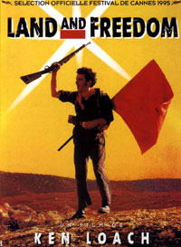
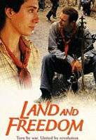

Générique
Fiche technique
- Royaume-uni / Espagne /
Italie / Allemagne - 1995
- Durée : 109 minutes (1h49)
- Format du film : 35mm
- Format image : 1.85
- Couleur
- Production
: British Broadcasting
Corporation (BBC) / BIM / British
Screen Productions / Canal+ España /
Degeto Film / Diaphana Films /
Eurimages Parallax Pictures /
Filmleitung Nordfilm Westfalen /
Television Espagnola (TVE) - Distribution: Diaphana

Équipe technique
- Réalisation : Ken Loach
- Scenario et dialogue : Jim Allen
- Production : Rebecca O'Brien
- Images : Barry Ackroyd
- Son: Ray Beckett
- Musique : George Fenton
- Montage : Jonathan Morris
- Décors : Martin Jonhson
Interprétation
- Ian Hart : David Carr
- Iciar Bollain : Maïté
- Rosana Pastor : Blanca
- Tom Gilroy : Gene Lawrence
- Marc Martinez : Vidal
- Frédéric Pierrot : Bernard
- Suzanne Maddock : Kim
- Angela Clarke : Kitty
- Jordi Dauder : Salas
- Ricard Arilla : le prêtre
- Eoin McCarthy : Coogan
- Paul Laverty : Jimmy
- Mandy Walsh : Dot
Guillaume Andreux - CIAN 2006/2007 - Sources: Bibliothèque du Film (BIFI)
Site
optimisé
pour